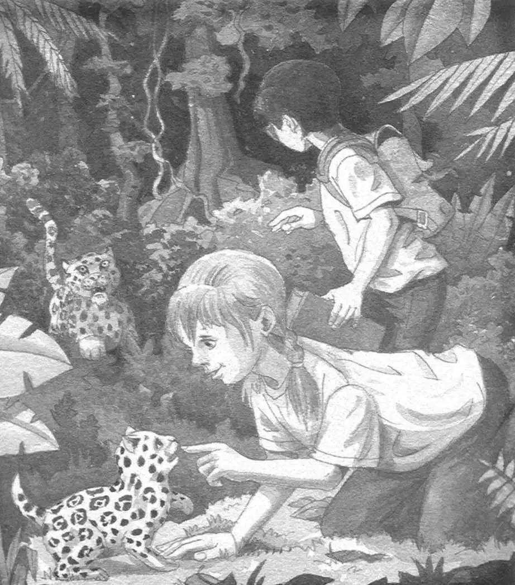

Jack and Annie jumped out of the canoe.
The rain was starting to fall harder.
The monkey took off. He swung from tree to tree, heading up the riverbank.
He screeched and beckoned to Jack and Annie.
“He wants us to follow him!” said Annie.
“No! We have to find the special thing. Then go home!” said Jack.
“He wants to help us!” said Annie. She took off after the monkey.
The two of them vanished into the rain forest.
“Annie!”
Thunder shook the sky.
“Oh, brother,” said Jack.
He dashed after Annie and the monkey. Into the dark forest.
The forest seemed surprisingly dry.
Jack looked up. It was still raining. But the treetops acted like a huge umbrella.
“Annie?” called Jack.
“Jack! Jack!” cried Annie.
“Where are you?”
“Here!”
Jack hurried in the direction of Annie’s voice.
Soon he found the monkey. He was screeching and swinging from a tree.
Annie was kneeling on the forest floor. She was playing with an animal that looked like a giant kitten.
“What’s that?” Jack said.
“I don’t know, but I love it!” said Annie.
Annie batted the animal’s paws. It had gold fur and black spots.
“I’d better find out what it is,” said Jack. He pulled out the rain forest book and flipped through it.
“Oh, it’s so cute,” said Annie.
Jack found a picture of an animal with gold fur and black spots. He read:
The jaguar is the biggest predator in the western hemisphere.
“Forget cute,” Jack said. “That must be a baby jaguar. It’s going to grow up and be the biggest predator in—”
“What’s a predator?” asked Annie.
GRRR! There was a terrible growl.
Jack whirled around.
The mother jaguar was coming out from behind a tree. She was creeping over the dead leaves—right toward Annie.

“Freeze!” whispered Jack.
Annie froze. But the jaguar kept moving slowly toward her.
“Help,” said Jack weakly.
Suddenly the monkey swooped down from his tree. He grabbed the jaguar’s tail!
The cat roared and spun around.
Annie jumped up.
The monkey pulled the jaguar’s tail again. Then he let go and took off.
The jaguar sprang after him.
“Run, Annie!” cried Jack.
Jack and Annie took off through the rain forest. They ran for their lives!